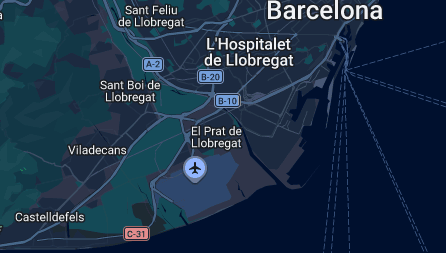
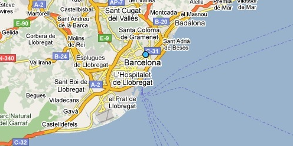
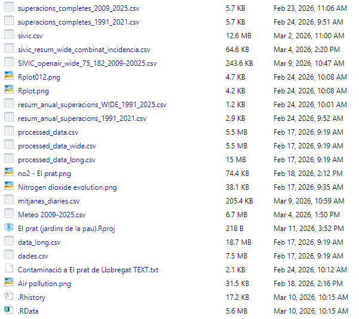
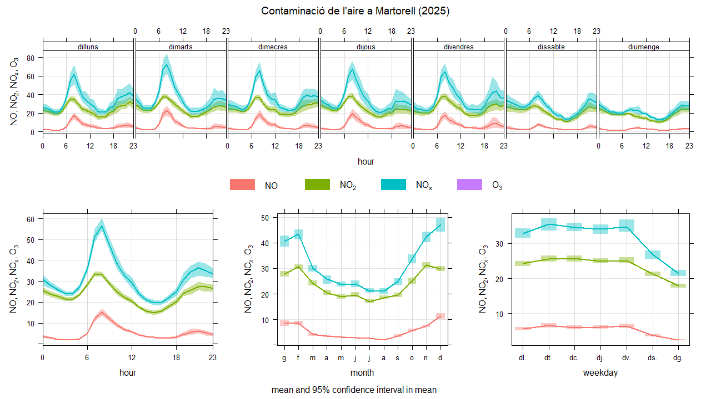
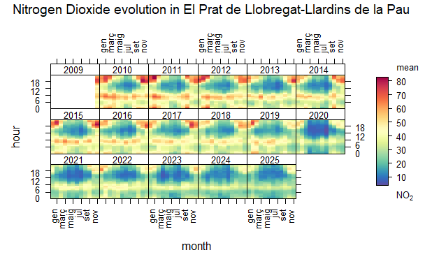
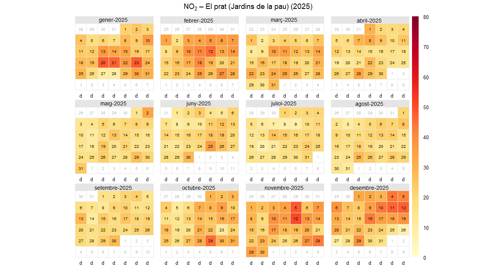

Air pollution, meteorological conditions and respiratory infections in El Prat de Llobregat: A 14-year spatiotemporal analysis
The objectives of this research project are:
- Yeray and Diego are studying all data from El Prat, a city located in the Baix Llobregat region. In this region, we are using data from the Air Pollution Prevention and Monitoring Network (XPVCA in Catalan). This corresponds to hourly air pollutant data from 2009 to 2025, including nitrogen oxide (NO), nitrogen dioxide (NO2), nitrogen oxides (NOX), ozone (O3), and sulfur dioxide (SO2).
- Meteorological data is obtained from the Meteocat XEMA server (Catalonia Meteorological Data Server). The data structure is semi-hourly (every 30 minutes) from 2009 and includes temperature, humidity, pressure, wind direction, wind speed, and solar irradiance.
- Respiratory infection data are collected from the Information System for Infection Surveillance in Catalonia (SIVIC) using data from region 75, which is the Barcelona Metropolitan South region; 182 is the Primary Care Centre from El Prat.
1. Area of study:
For this project, each group was assigned a different locality within Catalonia. Our group's study focuses on El Prat (Jardins de la Pau), located in the Barcelona Metropolitan South area, region 75 of the SIVIC data.


El Prat de Llobregat is a city of approximately 66,000 inhabitants, located in the Baix Llobregat region and part of the Barcelona Metropolitan Area. Its strategic location is only 2–3 km from Barcelona–El Prat Airport, which implies a significant influence of air traffic on air quality. The city is also connected by highways, trains, and metro, acting as a logistics and industrial corridor with nearby industrial areas and port and railway activities. All of this, along with heavy urban traffic, constitutes the main sources of air pollution that may affect the respiratory health of the population.
2. Data sources:
We needed many data sources for this project, including medical data from SIVIC and meteorological and pollution data from Meteocat and XEMA. Below are the websites we used and a brief explanation of each:
3. Methodology:
To manipulate and analyze the downloaded data, we used R Studio, an integrated development environment for the R programming language, dedicated to statistical computing and graphics. We used libraries like Openair and Tidyverse to clean, manipulate, and organize the data for creating graphs like the following:




4. Results:
5. Discussion:
The most relevant pollutant in the analysis is nitrogen dioxide (NO₂). It is the only one that exceeded the annual limit in some years and shows a high number of days with concentrations above 50 µg/m³. Graphs also show clear daily peaks, indicating NO₂ as the main indicator of pollution in the area, mainly associated with traffic and urban activity. In contrast, ozone (O₃) and sulfur dioxide (SO₂) do not show significant limit exceedances.
Meteorological conditions influence pollutant concentrations. Solar radiation favors ozone formation, especially during midday. Wind helps disperse pollutants and reduce concentration, while stable or low-wind conditions favor accumulation. In winter, thermal inversions can also keep pollutants near the ground, increasing NO₂ levels.
Data shows clear patterns across the day, week, and year. NO₂ has two daily peaks: morning and afternoon, coinciding with peak traffic hours. Concentrations are typically higher on weekdays than weekends. Annually, NO₂ is higher in winter due to poor dispersion, while ozone increases in summer due to higher solar radiation.
Although legal limits are generally met, NO₂ presence can affect health. This pollutant is linked to respiratory problems, airway irritation, and asthma aggravation. Vulnerable groups include children, the elderly, and people with respiratory illnesses. Therefore, even moderate pollution levels can pose a risk if exposure is prolonged.